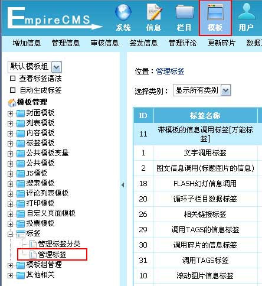
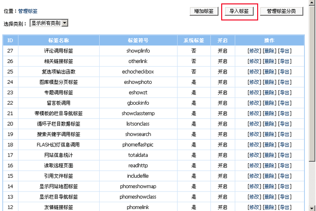
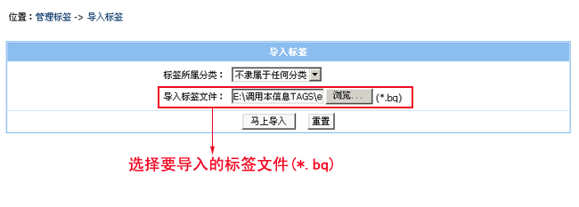
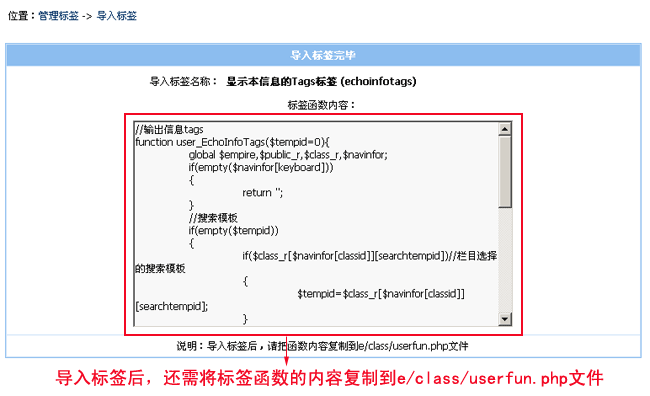
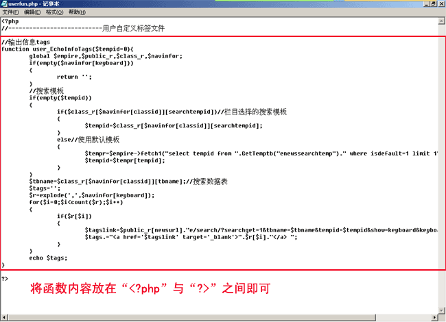
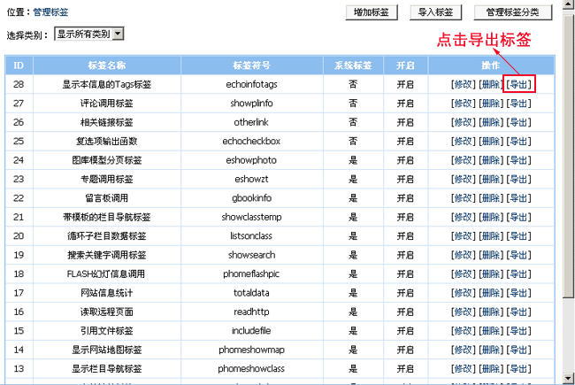
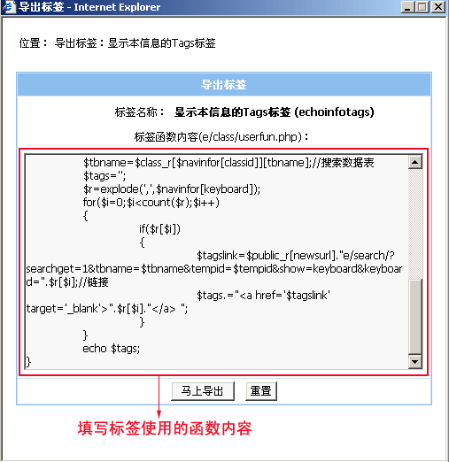
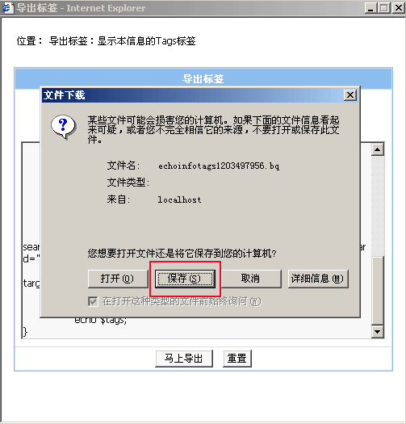
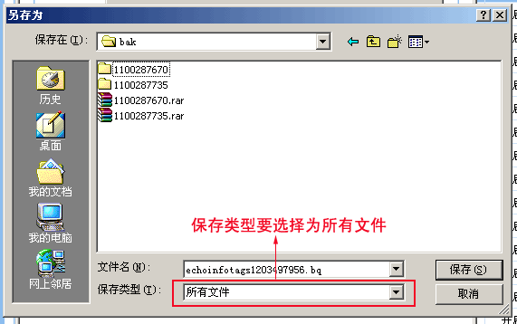

| 帝国CMS可以将模板的标签进行导出或导入，与别人共享你自定义的标签或导入别人提供的标签。 |
|
||
| 一、导入标签 |
| 1、登录后台，单击“模板”菜单，选择“管理标签”子菜单，进入管理标签界面： |
|  |
| 2、进入管理标签界面： |
|  |
| 2、点击“导入标签”按钮，进入导入标签页面，如图： |
|  选择要导入的标签文件（扩展名为.bq），然后点击“马上导入”按钮。 |
| 3、导入标签后，将显示标签所使用的函数，如下图： |
|  |
| 4、接着我们将标签函数的内容复制到自定义函数文件里，如下： |
| 用记事本或dreamweaver打开“e/class/userfun.php”文件，复制函数内容到文件里后保存文件即可，如下图： |
|  |
| 二、导出标签 |
| 1、登录后台，单击“模板”菜单，选择“管理标签”子菜单，进入管理标签界面： |
| 2、进入管理标签界面： |
|  |
| 2、点击“导出”链接后，进入导出标签页面，如图： |
| 将标签的函数内容复制到标签函数内容的文本框里，然后点击“马上导出”按钮。  |
| 3、导出标签后保存标签文件，如下图： |
|  点击保存后进入保存目录选择（保存类型要选择为所有文件），如图：  |
| 4、选择保存的位置，并且保存文件即可完成标签导出。 |